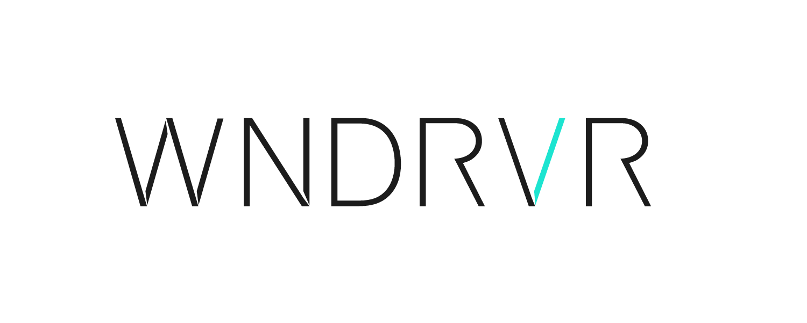

A containerized Python web server
Congratulations on getting
your first
OCI container on VxWorks.
Just like with Linux, containers are great to easily manage,
deploy and update applications in VxWorks.

2022 WIND RIVER, ALL RIGHTS RESERVED